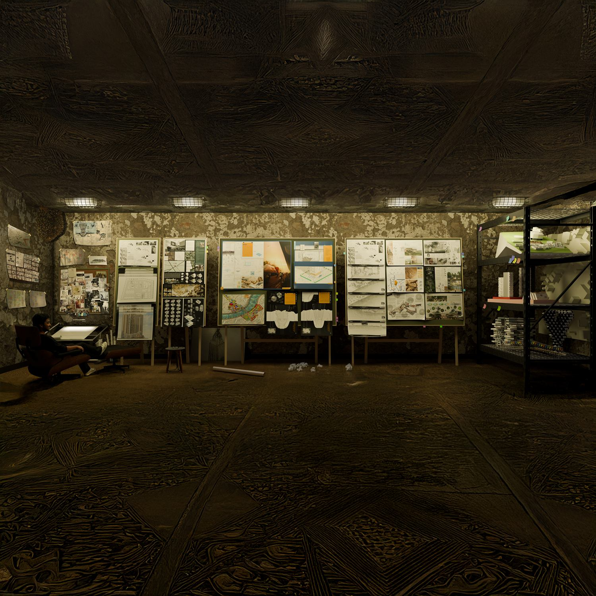

Portfolio website design · Tejas Ajit Jamdar
An interactive architecture portfolio, explored in three dimensions.
A digital gallery of architectural ideas by Tejas Ajit Jamdar, an architect based in Pune. Move between 3D models and original project presentations to see the work from different perspectives.
Enter the interactive gallery ↗Browse all projects →
A gallery built around architectural models
The homepage presents selected work through a glass-cube gallery. Each project has a three-dimensional building model, a title and a route into its presentation. The website treats the model as an introduction to the work: visitors can first encounter a project as a form, then explore its drawings and design narrative.
The collection includes academic work and architecture competitions, from The Quartz Citadel housing project to The Vision energy museum. Each project also has its own page, so a specific proposal can be opened and shared directly.
Movement introduces the work; drawings explain it
A cinematic opening, a restrained palette and scroll-led transitions establish the gallery’s pace. Within a project, the presentation sheets carry the detail. Models and presentation boards have different roles: one communicates overall form, while the other lets a reader study the proposal at their own pace.
For example, Hive starts with the question “Why can’t we design our own skyline?” Its project page brings together the original presentation and competition recognition. Tiny Library presents a collaborative competition proposal as a single board, with a model available in the gallery.
Two ways to explore the same portfolio
Choose the interactive 3D gallery for a visual introduction, or the project index for a direct route to the work. The project pages offer ordinary scrolling, named links and individual presentation images. That makes them useful when you want to revisit a drawing, share a project with a colleague or review several proposals in sequence.
Meet the architect
I’m Tejas Ajit Jamdar, an architect from Pune. My work brings together academic design, competition proposals and architectural visualization. I’m interested in opportunities and collaborations with architecture firms in Pune.
Read about my approach and experience, or get in touch to discuss my work.